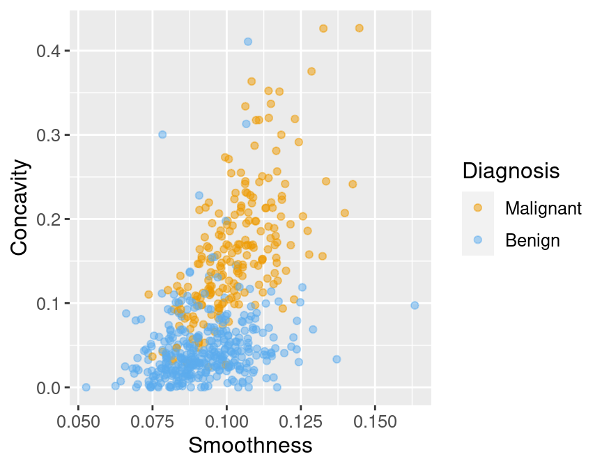
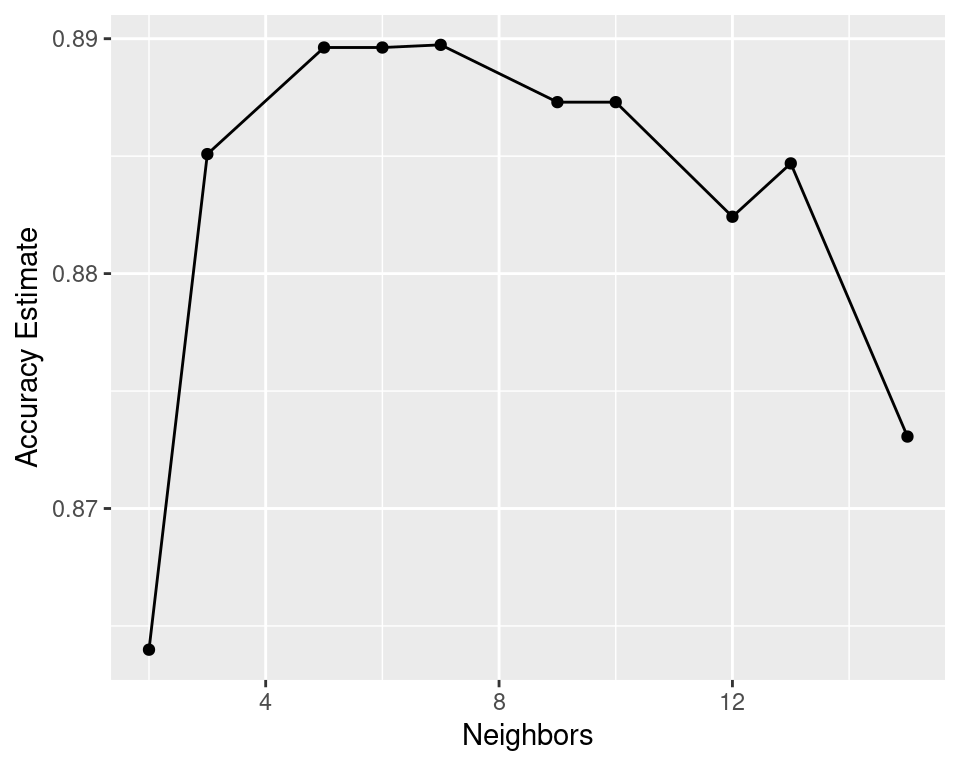
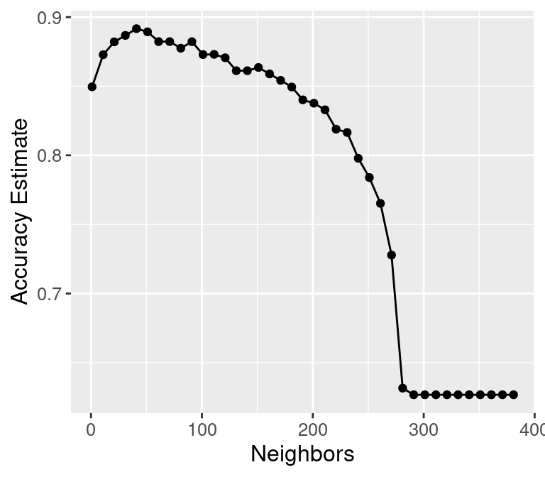

Chapter 7 Classification II: Evaluation & tuning
7.1 Overview
This chapter continues the introduction to predictive modelling through classification. While the previous chapter covered training and data preprocessing, this chapter focuses on how to split data, how to evaluate prediction accuracy, and how to choose model parameters to maximize performance.
7.2 Chapter learning objectives
By the end of the chapter, students will be able to:
- Describe what training, validation, and test data sets are and how they are used in classification
- Split data into training, validation, and test data sets
- Evaluate classification accuracy in R using a validation data set and appropriate metrics
- Execute cross-validation in R to choose the number of neighbours in a K-nearest neighbour classifier
- Describe advantages and disadvantages of the K-nearest neighbour classification algorithm
7.3 Evaluating accuracy
Sometimes our classifier might make the wrong prediction. A classifier does not need to be right 100% of the time to be useful, though we don’t want the classifier to make too many wrong predictions. How do we measure how “good” our classifier is? Let’s revisit the Wisconsin breast cancer example and think about how our classifier will be used in practice. A biopsy will be performed on a new patient’s tumour, the resulting image will be analyzed, and the classifier will be asked to decide whether the tumour is benign or malignant. The key word here is new: our classifier is “good” if it provides accurate predictions on data not seen during training. But then how can we evaluate our classifier without having to visit the hospital to collect more tumour images?
The trick is to split up the data set into a training set and test set, and only show the classifier the training set when building the classifier. Then to evaluate the accuracy of the classifier, we can use it to predict the labels (which we know) in the test set. If our predictions match the true labels for the observations in the test set very well, then we have some confidence that our classifier might also do a good job of predicting the class labels for new observations that we do not have the class labels for.
Note: if there were a golden rule of machine learning, it might be this: you cannot use the test data to build the model! If you do, the model gets to “see” the test data in advance, making it look more accurate than it really is. Imagine how bad it would be to overestimate your classifier’s accuracy when predicting whether a patient’s tumour is malignant or benign!

How exactly can we assess how well our predictions match the true labels for the observations in the test set? One way we can do this is to calculate the prediction accuracy. This is the fraction of examples for which the classifier made the correct prediction. To calculate this we divide the number of correct predictions by the number of predictions made. Other measures for how well our classifier performed include precision and recall; these will not be discussed here, but you will encounter them in other more advanced courses on this topic. This process is illustrated below:

In R, we can use the caret package not only to perform K-nearest neighbour classification, but also to assess how well our classification worked. Let’s start by loading the necessary libraries, reading in the breast cancer data from the previous chapter, and making a quick scatter plot visualization of tumour cell concavity versus smoothness coloured by diagnosis.
# load libraries
library(tidyverse)
library(caret)
#load data
cancer <- read_csv("data/clean-wdbc.data.csv") %>%
mutate(Class = as.factor(Class)) # because we will be doing statistical analysis on a categorical variable
# colour palette
cbPalette <- c("#56B4E9", "#E69F00","#009E73", "#F0E442", "#0072B2", "#D55E00", "#CC79A7", "#999999")
# create scatter plot of tumour cell concavity versus smoothness,
# labelling the points be diagnosis class
perim_concav <- cancer %>%
ggplot(aes(x = Smoothness, y = Concavity, color = Class)) +
geom_point(alpha = 0.5) +
labs(color = "Diagnosis") +
scale_color_manual(labels = c("Benign", "Malignant"), values = cbPalette)
perim_concav
1. Create the train / test split
Once we have decided on a predictive question to answer and done some preliminary exploration, the very next thing to do is to split the data into the training and test sets. Typically, the training set is between 50 - 100% of the data, while the test set is the remaining 0 - 50%; the intuition is that you want to trade off between training an accurate model (by using a larger training data set) and getting an accurate evaluation of its performance (by using a larger test data set). Here, we will use 75% of the data for training, and 25% for testing. To do this we will use the createDataPartition function from the caret package, specifying values for 3 arguments:
y: the class labels. These must be a vector.p: the proportion (between 0 and 1) of the data you would like in the training data set.list = FALSE: this states that we want the training and test sets in the form of a matrix, not a list.
The createDataPartition function returns the row numbers for the training set.
set.seed(1) # makes the random selection of rows reproducible
set_rows <- cancer %>%
select(Class) %>%
unlist() %>% # converts Class from a tibble to a vector
createDataPartition(p = 0.75, list = FALSE)
head(set_rows)## Resample1
## [1,] 1
## [2,] 5
## [3,] 6
## [4,] 9
## [5,] 10
## [6,] 11Note: You will see in the code above that we use the
set.seedfunction again, as discussed in the previous chapter. In this case it is becausecreateDataPartitionuses random sampling to choose which rows will be in the training set. Since we want our code to be reproducible and generate the same train/test split each time it is run, we useset.seed.
Now that we have the row numbers for the training set, we can use the slice function to get the rows from the original data set (here cancer) to create the training and test data sets.
training_set <- cancer %>% slice(set_rows)
test_set <- cancer %>% slice(-set_rows)
glimpse(training_set)## Observations: 427
## Variables: 12
## $ ID <dbl> 842302, 84358402, 843786, 844981, 84501001, 84…
## $ Class <fct> M, M, M, M, M, M, M, M, M, M, M, M, M, M, M, M…
## $ Radius <dbl> 1.8850310, 1.2974336, -0.1653528, -0.1612147, …
## $ Texture <dbl> -1.3580985, -1.4654809, -0.3135604, 0.8220900,…
## $ Perimeter <dbl> 2.30157548, 1.33736272, -0.11490835, -0.031581…
## $ Area <dbl> 1.999478159, 1.219651081, -0.244105421, -0.248…
## $ Smoothness <dbl> 1.30653666, 0.22036227, 2.04671194, 1.66129523…
## $ Compactness <dbl> 2.6143647, -0.3131190, 1.7201029, 1.8167112, 5…
## $ Concavity <dbl> 2.10767182, 0.61263970, 1.26213265, 1.27890922…
## $ Concave_points <dbl> 2.29405760, 0.72861815, 0.90509140, 1.39039284…
## $ Symmetry <dbl> 2.7482041, -0.8675896, 1.7525273, 2.3877562, 2…
## $ Fractal_dimension <dbl> 1.93531174, -0.39675052, 2.23983079, 1.2875166…glimpse(test_set)## Observations: 142
## Variables: 12
## $ ID <dbl> 842517, 84300903, 84348301, 844359, 84458202, …
## $ Class <fct> M, M, M, M, M, M, M, B, B, B, M, M, M, M, B, B…
## $ Radius <dbl> 1.80433981, 1.51054113, -0.28121702, 1.3677798…
## $ Texture <dbl> -0.36887865, -0.02395331, 0.13386631, 0.322599…
## $ Perimeter <dbl> 1.53377643, 1.34629062, -0.24971958, 1.3671223…
## $ Area <dbl> 1.88882702, 1.45500430, -0.54953769, 1.2740984…
## $ Smoothness <dbl> -0.375281748, 0.526943750, 3.391290721, 0.5181…
## $ Compactness <dbl> -0.43006581, 1.08198014, 3.88997467, 0.0211963…
## $ Concavity <dbl> -0.14661996, 0.85422232, 1.98783917, 0.5091042…
## $ Concave_points <dbl> 1.0861286, 1.9532817, 2.1738732, 1.1956637, 0.…
## $ Symmetry <dbl> -0.24367526, 1.15124203, 6.04072615, 0.2622449…
## $ Fractal_dimension <dbl> 0.28094279, 0.20121416, 4.93067187, -0.0147175…We can see from glimpse in the code above that the training set contains 427 observations, while the test set contains 142 observations. This corresponds to a train / test split of 75% / 25%, as desired.
2. Train the classifier
Now that we have split our original data set into training and test sets, we can create our K-nearest neighbour classifier with only the training set using the technique we learned in the previous chapter. For now, we will just choose the number \(K\) of neighbours to be 3, and use concavity and smoothness as the predictors.
X_train <- training_set %>%
select(Concavity, Smoothness) %>%
data.frame()
Y_train <- training_set %>%
select(Class) %>%
unlist()
k = data.frame(k = 3)
set.seed(1)
model_knn <- train(x = X_train, y = Y_train, method = "knn", tuneGrid = k)
model_knn## k-Nearest Neighbors
##
## 427 samples
## 2 predictor
## 2 classes: 'B', 'M'
##
## No pre-processing
## Resampling: Bootstrapped (25 reps)
## Summary of sample sizes: 427, 427, 427, 427, 427, 427, ...
## Resampling results:
##
## Accuracy Kappa
## 0.8098792 0.5916618
##
## Tuning parameter 'k' was held constant at a value of 3Note: Here again you see the
set.seedfunction. In the K-nearest neighbour implementation incaret, when there is a tie for the majority neighbour class, the winner is randomly selected. Although there is no chance of a tie when \(K\) is odd (here \(K=3\)), it is possible that the code may be changed in the future to have an even value of \(K\). Thus, to prevent potential issues with reproducibility, we have set the seed. Note that in your own code, you only have to set the seed once at the beginning of your analysis.
3. Predict the labels in the test set
Now that we have a K-nearest neighbour classifier object, we can use it to predict the class labels for our test set:
X_test <- test_set %>%
select(Concavity, Smoothness) %>%
data.frame()
Y_test_predicted <- predict(object = model_knn, X_test)
head(Y_test_predicted)## [1] B M M M M M
## Levels: B M4. Compute the accuracy
Finally we can assess our classifier’s accuracy. To do this we need to create a vector containing the class labels for the test set. Next we use the function confusionMatrix to get the statistics about the quality of our model, this includes the statistic we are interested: accuracy. confusionMatrix takes two arguments:
data(the predicted class labels for the test set), andreference(the original/measured class labels for the test set).
Y_test <- test_set %>%
select(Class) %>%
unlist()
model_quality <- confusionMatrix(data = Y_test_predicted, reference = Y_test)
model_quality## Confusion Matrix and Statistics
##
## Reference
## Prediction B M
## B 72 8
## M 17 45
##
## Accuracy : 0.8239
## 95% CI : (0.7512, 0.8827)
## No Information Rate : 0.6268
## P-Value [Acc > NIR] : 2.437e-07
##
## Kappa : 0.6362
##
## Mcnemar's Test P-Value : 0.1096
##
## Sensitivity : 0.8090
## Specificity : 0.8491
## Pos Pred Value : 0.9000
## Neg Pred Value : 0.7258
## Prevalence : 0.6268
## Detection Rate : 0.5070
## Detection Prevalence : 0.5634
## Balanced Accuracy : 0.8290
##
## 'Positive' Class : B
## A lot of information is output from confusionMatrix, but what we are interested in at this point is accuracy (found on the 6th line of printed output). That single value can be obtained from the confusionMatrix object using base/built-in R subsetting:
model_quality$overall[1]## Accuracy
## 0.8239437From a value of accuracy of around 0.824, we can say that our K-nearest neighbour classifier predicted the correct class label on roughly 82% of the examples.
7.4 Tuning the classifier
The vast majority of predictive models in statistics and machine learning have parameters that you have to pick. For example, in the K-nearest neighbour classification algorithm we have been using in the past two chapters, we have had to pick the number of neighbours \(K\) for the class vote. Is it possible to make this selection, i.e., tune the model, in a principled way? Ideally what we want is to somehow maximize the performance of our classifier on data it hasn’t seen yet. So we will play the same trick we did before when evaluating our classifier: we’ll split our overall training data set further into two subsets, called the training set and validation set. We will use the newly-named training set for building the classifier, and the validation set for evaluating it! Then we will try different values of the parameter \(K\) and pick the one that yields the highest accuracy.
Remember: don’t touch the test set during the tuning process. Tuning is a part of model training!
7.4.1 Cross-validation
There is an important detail to mention about the process of tuning: we can, if we want to, split our overall training data up in multiple different ways, train and evaluate a classifier for each split, and then choose the parameter based on all of the different results. If we just split our overall training data once, our best parameter choice will depend strongly on whatever data was lucky enough to end up in the validation set. Perhaps using multiple different train / validation splits, we’ll get a better estimate of accuracy, which will lead to a better choice of the number of neighbours \(K\) for the overall set of training data.
Note: you might be wondering why we can’t we use the multiple splits to test our final classifier after tuning is done. This is simply because at the end of the day, we will produce a single classifier using our overall training data. If we do multiple train / test splits, we will end up with multiple classifiers, each with their own accuracy evaluated on different test data!
Let’s investigate this idea in R! In particular, we will use different seed values in the set.seed function to generate five different train / validation splits of our overall training data, train five different K-nearest neighbour models, and evaluate their accuracy. First we’ll rename our overall training data.
X_train_total <- X_train
Y_train_total <- Y_trainThen we’ll try 5 different random train / validation splits of the data and record the accuracy:
accuracies <- c()
for (i in 1:5){
set.seed(i) # makes the random selection of rows reproducible
# create the 75 / 25 train/validation split
set_rows <- Y_train_total %>%
createDataPartition(p = 0.75, list = FALSE)
#split the X and Y data into train/validation
X_train <- X_train_total %>% slice(set_rows)
Y_train <- Y_train_total[set_rows]
X_validation <- X_train_total %>% slice(-set_rows)
Y_validation <- Y_train_total[-set_rows]
#train the KNN model with K=3, and predict the validation labels
k = data.frame(k = 3)
model_knn <- train(x = X_train, y = Y_train, method = "knn", tuneGrid = k)
Y_validation_predicted <- predict(object = model_knn, X_validation)
#compute the accuracy
model_quality <- confusionMatrix(data = Y_validation_predicted, reference = Y_validation)
accuracies <- append(accuracies, model_quality$overall[1])
}
accuracies## Accuracy Accuracy Accuracy Accuracy Accuracy
## 0.8301887 0.8773585 0.8396226 0.8207547 0.8867925With five different shuffles of the data, we get five different values for accuracy: 0.83, 0.88, 0.84, 0.82, and 0.89! None of these is necessarily “more correct” than any other; they’re just five estimates of the true, underlying accuracy of our classifier built using our overall training data. We can combine the estimates by taking their average (here 0.851) to try to get a single assessment of our classifier’s accuracy; this has the effect of reducing the influence of any one (un)lucky validation set on the estimate.
In practice, we don’t use random splits, but rather use a more structured splitting procedure so that each observation in the data set is used in a validation set only a single time. The name for this strategy is called cross-validation. In cross-validation, we split our overall training data into \(C\) evenly-sized chunks, and then iteratively use \(1\) chunk as the validation set and combine the remaining \(C-1\) chunks as the training set:

In the picture above, \(C=5\) different chunks of the data set are used, resulting in 5 different choices for the validation set; we call this 5-fold cross-validation. To do 5-fold cross-validation in R with caret, we use another function called trainControl. This function passes additional information to the train function we use to create our classifier. The arguments we pass trainControl are:
method="cv": specifies to use cross-validation for assessing qualitynumber: how many chunks to split the data into for cross validation
train_control <- trainControl(method="cv", number = 5)Then, when we create our classifier, we add an additional argument to train called trControl, which we set to the train_control object we just created. One benefit of using caret for this is that we do not need to manually do any of the work of cross-validation ourselves; the train function will handle creating the chunks, doing multiple rounds of training and evaluation, and averaging the results for us.
set.seed(1234)
k = data.frame(k = 3)
knn_model_cv_5fold <- train(x = X_train_total, y = Y_train_total, method = "knn", tuneGrid = k, trControl = train_control)
knn_model_cv_5fold## k-Nearest Neighbors
##
## 427 samples
## 2 predictor
## 2 classes: 'B', 'M'
##
## No pre-processing
## Resampling: Cross-Validated (5 fold)
## Summary of sample sizes: 342, 341, 341, 341, 343
## Resampling results:
##
## Accuracy Kappa
## 0.8219868 0.6175085
##
## Tuning parameter 'k' was held constant at a value of 3Note: we set the seed when we call
trainnot only because of the potential for ties, but also because we are doing cross-validation. Cross-validation uses a random process to select how to partition the training data.
We can choose any number of folds, and typically the more we use the better our accuracy estimate will be. However, we are limited by computational power: the more folds we choose, the more computation it takes, and hence the more time it takes to run the analysis. So when you do cross-validation, you need to consider the size of the data, and the speed of the algorithm (e.g., K-nearest neighbour) and the speed of your computer. In practice, this is a trial and error process, but typically \(C\) is chosen to be either 5 or 10. Here we show what happens when we split the data into 10 chunks and do 10-fold cross-validation:
train_control <- trainControl(method="cv", number = 10)
set.seed(1234)
knn_model_cv_10fold <- train(x = X_train_total, y = Y_train_total, method = "knn", tuneGrid = k, trControl = train_control)
knn_model_cv_10fold## k-Nearest Neighbors
##
## 427 samples
## 2 predictor
## 2 classes: 'B', 'M'
##
## No pre-processing
## Resampling: Cross-Validated (10 fold)
## Summary of sample sizes: 385, 384, 384, 384, 384, 384, ...
## Resampling results:
##
## Accuracy Kappa
## 0.843057 0.6607231
##
## Tuning parameter 'k' was held constant at a value of 37.4.2 Parameter value selection
Using 5- and 10-fold cross-validation, we have estimated that the prediction accuracy of our classifier is somewhere around 85%. Whether 85% is good or not depends entirely on the downstream application of the data analysis. In the present situation, we are trying to predict a tumour diagnosis, with expensive, damaging chemo/radiation therapy or patient death as potential consequences of misprediction. Hence, we’d like to do better than 85% for this application. In order to improve our classifier, we have one choice of parameter: the number of neighbours, \(K\). Since cross-validation helps us evaluate the accuracy of our classifier, we can use cross-validation to calculate an accuracy for each value of \(K\) in a reasonable range, and then pick the value of \(K\) that gives us the best accuracy. In R, we can accomplish this tuning by passing a vector of values for \(K\) to the tuneGrid argument of train.
train_control <- trainControl(method="cv", number = 10)
k = data.frame(k = c(1, 3, 5, 7, 9, 11, 13, 15, 17))
set.seed(1234)
knn_model_cv_10fold <- train(x = X_train_total, y = Y_train_total, method = "knn", tuneGrid = k, trControl = train_control)
knn_model_cv_10fold## k-Nearest Neighbors
##
## 427 samples
## 2 predictor
## 2 classes: 'B', 'M'
##
## No pre-processing
## Resampling: Cross-Validated (10 fold)
## Summary of sample sizes: 385, 384, 384, 384, 384, 384, ...
## Resampling results across tuning parameters:
##
## k Accuracy Kappa
## 1 0.7967696 0.5658038
## 3 0.8430570 0.6607231
## 5 0.8408449 0.6596402
## 7 0.8503160 0.6801461
## 9 0.8503160 0.6819992
## 11 0.8572928 0.6981143
## 13 0.8549118 0.6906446
## 15 0.8502606 0.6808579
## 17 0.8525862 0.6866224
##
## Accuracy was used to select the optimal model using the largest value.
## The final value used for the model was k = 11.Although caret provides a selection of \(K=11\) for us by maximizing the accuracy estimate, it is helpful regardless to visualize the accuracy as we increase \(K\). We can access the results from the cross-validation via theresults attribute of the train object (our classifier).
accuracies <- knn_model_cv_10fold$results
accuracies ## k Accuracy Kappa AccuracySD KappaSD
## 1 1 0.7967696 0.5658038 0.06864062 0.14354647
## 2 3 0.8430570 0.6607231 0.04435446 0.09509448
## 3 5 0.8408449 0.6596402 0.04051072 0.08085130
## 4 7 0.8503160 0.6801461 0.04084149 0.08685086
## 5 9 0.8503160 0.6819992 0.03615899 0.07298776
## 6 11 0.8572928 0.6981143 0.04931848 0.09851785
## 7 13 0.8549118 0.6906446 0.04184867 0.08469489
## 8 15 0.8502606 0.6808579 0.02878506 0.05850151
## 9 17 0.8525862 0.6866224 0.03428950 0.06804069Now we can plot accuracy versus \(K\):
accuracy_vs_k <- ggplot(accuracies, aes(x = k, y = Accuracy)) +
geom_point() +
geom_line()
accuracy_vs_k
Based off of the visualization above, we might agree with caret’s choice of \(K=11\). But as you can see, there is no exact or perfect answer here; any choice between \(K=8\) and \(K = 15\) would be reasonably justified. Remember: the values you see on this plot are estimates of the true accuracy of our classifier. Although the \(K=11\) value is higher than the others on this plot, that doesn’t mean the classifier is actually more accurate with this parameter value! Generally, when selecting \(K\) (and other parameters for other predictive models), we are looking for a value where:
- we get roughly optimal accuracy, so that our model will likely be accurate
- changing the value to a nearby one (e.g. from \(K=11\) to 10 or 12) doesn’t decrease accuracy too much, so that our choice is reliable in the presence of uncertainty
- the cost of training the model is not prohibitive (e.g., in our situation, if \(K\) is too large, predicting becomes expensive!)
7.4.3 Under/overfitting
To build a bit more intuition, what happens if we keep increasing the number of neighbours \(K\)? In fact, the accuracy actually starts to decrease! Take a look as the plot below as we vary \(K\) from 1 to almost the number of observations in the data set:
train_control <- trainControl(method="cv", number = 10)
k_lots = data.frame(k = seq(from = 1, to = 385, by = 10))
set.seed(1234)
knn_model_cv_10fold_lots <- train(x = X_train_total, y = Y_train_total, method = "knn", tuneGrid = k_lots, trControl = train_control)
accuracies_lots <- knn_model_cv_10fold_lots$results
accuracy_vs_k_lots <- ggplot(accuracies_lots, aes(x = k, y = Accuracy)) +
geom_point() +
geom_line()
accuracy_vs_k_lots
Underfitting: What is actually happening to our classifier that causes this? As we increase the number of neighbours, more and more of the training observations (and those that are farther and farther away from the point) get a “say” in what the class of a new observation is. This causes a sort of “averaging effect” to take place, making the boundary between where our classifier would predict a tumour to be malignant versus benign to smooth out and become simpler. If you take this to the extreme, setting \(K\) to the total training data set size, then the classifier will always predict the same label regardless of what the new observation looks like. In general, if the model isn’t influenced enough by the training data, it is said to underfit the data.
Overfitting: In contrast, when we decrease the number of neighbours, each individual data point has a stronger and stronger vote regarding nearby points. Since the data themselves are noisy, this causes a more “jagged” boundary corresponding to a less simple model. If you take this case to the extreme, setting \(K = 1\), then the classifier is essentially just matching each new observation to its closest neighbour in the training data set. This is just as problematic as the large \(K\) case, because the classifier becomes unreliable on new data: if we had a different training set, the predictions would be completely different. In general, if the model is influenced too much by the training data, it is said to overfit the data.
You can see this effect in the plots below as we vary the number of neighbours \(K\) in (1, 7, 20, 200):
7.5 Splitting data
Shuffling: When we split the data into train, test, and validation sets, we make the assumption that there is no order to our originally collected data set. However, if we think that there might be some order to the original data set, then we can randomly shuffle the data before splitting it. The caret package’s createDataPartition function does this for us.
Stratification: If the data are imbalanced, we also need to be extra careful about splitting the data to ensure that enough of each class ends up in each of the train, validation, and test partitions. Luckily, the createDataPartition does this for us as well.
7.6 Summary
Classification algorithms use one or more quantitative variables to predict the value of a third, categorical variable. The K-nearest neighbour algorithm in particular does this by first finding the K points in the training data nearest to the new observation, and then returning the majority class vote from those training observations. We can evaluate a classifier by splitting the data randomly into a training and test data set, using the training set to build the classifier, and using the test set to estimate its accuracy. To tune the classifier (e.g., select the K in K-nearest neighbours), we maximize accuracy estimates from cross-validation.

Source: https://towardsdatascience.com/train-test-split-and-cross-validation-in-python-80b61beca4b6
The overall workflow for performing K-nearest neighbour classification in caret is as follows:
- Use the
createDataPartitionfunction to split the data into a training and test set. Put the test set aside for now. - Use the
trainControlfunction to specify whether to use cross-validation and how many folds - Use the
trainfunction to train and evaluate the classifier for different values of \(K\) - Retrain the classifier on all the training data, using the best parameter from the previous step
- Evaluate the estimated accuracy of the classifier on the test set
Strengths:
- Simple and easy to understand
- No assumptions about what the data must look like
- Works easily for binary (two-class) and multi-class (> 2 classes) classification problems
Weaknesses:
- As data gets bigger and bigger, K-nearest neighbour gets slower and slower, quite quickly
- Does not perform well with a large number of predictors
- Does not perform well when classes are imbalanced (when many more observations are in one of the classes compared to the others)